Calibrating Interval Estimates using the Bootstrap
Review
Point and Interval Estimation
$$ \newcommand{X}{} \newcommand{Y}{} % A hex digit after # inside a macro body is eaten by build-time expansion, so digit-leading hexes spell # via .
$$
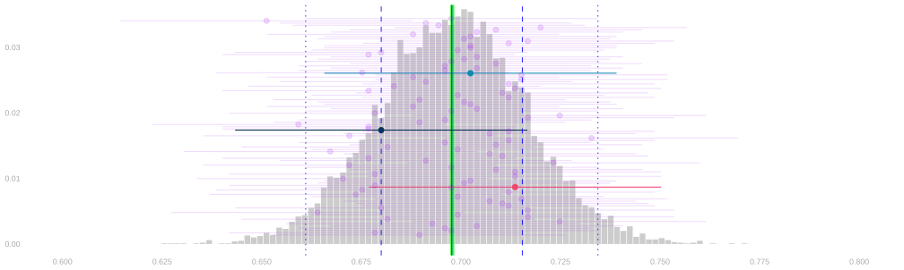
- In last week, we talked about estimating population frequencies.
- Our point estimates were frequencies in a random sample drawn from the population.
- To characterize our uncertainty, we used interval estimates.
- In particular, calibrated interval estimates. Confidence intervals.
- To get these intervals, we add ‘arms’ of equal length to our point estimate.
- We choose the arm length so that, in 95% of surveys done like ours, the estimation target is within them.
- In particular, calibrated interval estimates. Confidence intervals.
Calibration of Interval Estimates
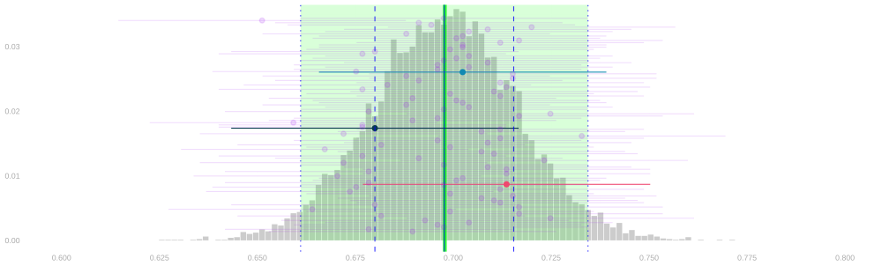
- We can do that using the sampling distribution of our point estimate.
- We’d draw arms out from the sampling distribution’s center until they span 95% of point estimates.
- We can see that this is the right length by a shift of perspective.
- A point estimate can touch the mean with its arms iff1 the mean can touch it with equally long arms.
- So 95% of intervals cover if and only if 95% of point estimates are within the mean’s arms.
- In practice, we can’t do exactly that. We don’t know the sampling distribution.
- But we can use an estimate of the sampling distribution in its place.
- If it’s a good one, we’ll get approximately 95% coverage.
A Parametric Estimate of the Sampling Distribution
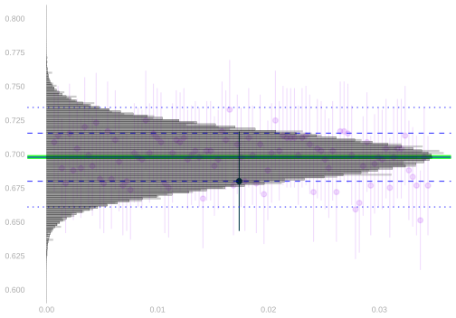
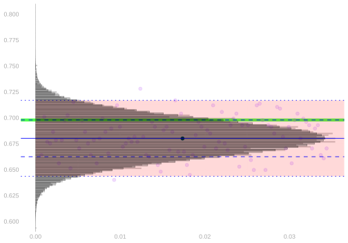
- Our estimate was based on knowledge of the parametric form of the sampling distribution.
- When we sample with replacement, it’s binomial.
- It’s the distribution of the frequency of heads in 625 flips of a coin with probability \theta
- where \theta is the ‘frequency of heads’ in the population.
- e.g. \theta\approx 0.70 is the proportion of registered voters who will vote in our turnout example.
P_\theta(\hat\theta = t) = \binom{n}{nt} \theta^{nt} (1-\theta)^{n(1-t)} \quad \text{ is the probability of the sample frequency being $t$} \quad
- By parametric form, I mean a formula in terms of some parameters.
- That tells us what parameters we need to estimate to estimate the sampling distribution.
- In this case, the only (unknown) parameter is the \theta, the frequency of heads in the population.
- We plugged in the sample frequency, \hat\theta, to get our estimate of the sampling distribution.
\hat P_\theta(\hat\theta = t) = \binom{n}{nt} \hat\theta^{nt} (1-\hat\theta)^{n(1-t)} \quad \text{ is our estimate of the same thing} \quad
An Exercise
A Survey
- The faint dots are the room. One per person, sitting at the straw they liked.
Our Sample
- The blue dots are the people the d10 called. That’s our sample.
- Anyone called twice gets two blue dots side by side. That’s what with replacement looks like.
- We’re going to run a survey on Candy Preferences.
- I’ll draw a sample of size n=6, with replacement, from the people in the room.
- They’ll pick candy and write their selection into a sample table on the board.
- In particular, we’ll write out whether they chose pickle (Y=1) or watermelon (Y=0) sour straws.
- Then we’re going to estimate the sampling distribution in a new way.
- It’ll be a lot like calculating the actual sampling distribution.
- We’ll draw a sample of size n with replacement, use it to calculate our estimator, and repeat.
- What’s different is the population we’re drawing our sample from.
- We don’t have responses from the whole population, so we’ll draw it from the closest thing we’ve got: the sample.
- We call this bootstrapping.
- The estimate of the sampling distribution we get is called the bootstrap sampling distribution.
- I’ve drawn the sample we got from our survey on the board.
- Here’s how you draw a sample from the bootstrap sampling distribution of our point estimator.
- Roll your die 6 times to draw a sample of size n=6 from the sample.
- Calculate the sample frequency. That’s one draw from the bootstrap sampling distribution. Write it down.
- If we all do this 5 times, we’ll have a bunch of draws.
- We’ll tally them up on the board and visualize the result as a histogram.
- A histogram of draws from the bootstrap sampling distribution.
One Bootstrap Sample
- Same picture, one more drawing. The red dots are your bootstrap sample.
- We drew them the way we drew the blue ones — with replacement — but from the blue dots, not from the room.
- The number underneath is your \hat\theta^*, the frequency of pickle among the red dots. That’s one draw from the bootstrap sampling distribution.
Simulating a Few More Draws
Our Tally
- Type the room’s tally into
countabove and run it. - One dot per bootstrap draw. That’s what we get bootstrapping.
A Rough Histogram
A Fine Histogram
The Estimate
Our Draws Against It
- If all has gone to plan, our histogram looks a lot like our binomial estimate of the sampling distribution.
- If we substitute in a computer tally of 10,000 draws from the bootstrap sampling distribution, we nail it.
- It looks like the bootstrap sampling distribution is the binomial estimate.
- Q. It is. How do you know?
- We know the distribution of the frequency of 1s in a sample of size n drawn with replacement …
- … from a population y_1\ldots y_m of binary responses with frequency \theta.
- It’s \text{Binomial}(n, \theta). To estimate it, we plug in \hat\theta, the frequency of 1s in our sample.
- So our Binomial estimate is the distribution of the frequency of 1s in a sample of size n drawn with replacement …
- … from ‘a population’ Y_1 \ldots Y_n with frequency \hat\theta.
- What’s a draw from the bootstrap sampling distribution?
- Each bootstrap sample is the frequency of 1s in a sample of size n drawn with replacement …
- … from ‘a population’ Y_1 \ldots Y_n in which the frequency of 1s is \hat\theta, the frequency of 1s in our sample.
- Because that ‘population’ is our sample.
The Picture
\begin{array}{ccc} \underset{\textstyle\text{drawing from the population}}{\text{sampling distribution}} & = & \text{Binomial}(n, \theta)\big/n \\[18pt] {\overset{\normalsize ?}{\approx}} & & {\Big\downarrow}\ {\footnotesize\text{plug in } \hat\theta} \\[18pt] \underset{\textstyle\text{drawing from the sample}}{\text{bootstrap sampling distribution}} & = & \text{Binomial}(n, \hat\theta)\big/n \end{array}
- This is what the room just did, drawn as a rectangle.
- Top edge: last week’s derivation. Sampling with replacement, the sample frequency is Binomial.
- Right edge: our estimate. One approximation — \hat\theta in place of \theta.
- Bottom edge: today’s exercise. The bootstrap sampling distribution is the plug-in estimate.
- The left edge is the one we care about: does the bootstrap estimate the real sampling distribution?
- Follow the other three edges around the rectangle.
- The left edge inherits the right edge’s error — and only that.
The Bootstrap
The Bootstrap Interpretation in Our Turnout Poll

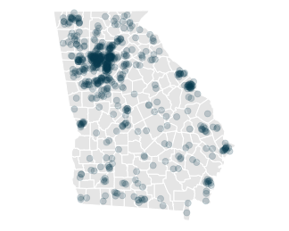
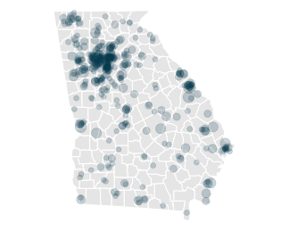
- The sampling distribution estimate we’ve used was \text{Binomial}(n,\hat\theta) for n=625 and \hat\theta \approx 0.68.
- It’s the distribution of the proportion heads in 625 flips of a coin with probability \hat\theta \approx 0.68 of heads.
- where \hat\theta \approx 0.68 is the proportion of voters we’ve polled who will vote.
- That is, it’s the sampling distribution of a ‘poll’ of the people in our sample, i.e.
- roll a 625-sided die 625 times
- call up the corresponding person in our sample
- and counting up the yeses we hear
- Note that this is random because we’re drawing with replacement.
- Each time we run this poll, we call each person in our sample 0,1,2,… times
- And the number of times we call them is random.
- If we plot our voters on a map, you can see the idea in visual terms.
- On the left, we have the population.
- In the middle, we have our sample. It’s drawn, with replacement, from the population.
- On the right, we have something else. A new sample drawn, with replacement, from the sample.
- Each ‘call’ that a person receives increases the size of their dot: \text{circle area} \propto \text{number of calls}.
- In the sample, even though it’s drawn with replacement, all dots are the same size.
- Because we draw from such a large population, nobody gets called twice.
- In the bootstrap sample, dots vary in size.
- Because we draw n people from a sample of size n, it’s almost impossible not to call somebody twice.
Bootstrapping
- Before the election, we don’t observe the population. But we do observe the sample.
- And we can sample from the sample and act as if it were the population.
- We’ll take repeated random samples of size 625, with replacement, from our sample of size 625.
- We call these bootstrap samples and estimates based on them bootstrap estimates.
- The distribution of these estimates is called the bootstrap sampling distribution.
- If the sample is like the population, this should be like our estimator’s actual sampling distribution.
The Sample \begin{array}{r|rrrr|r} i & 1 & 2 & \dots & 625 & \bar{Y}_{625} \\ Y_i & 1 & 1 & \dots & 1 & 0.68 \\ \end{array}
The Bootstrap Sample
\begin{array}{r|rrrr|r} i & 1 & 2 & \dots & 625 & \bar{Y}_{625}^* \\ Y_i^* & 1 & 1 & \dots & 1 & 0.69 \\ \end{array}
The Population
\begin{array}{r|rrrr|r} j & 1 & 2 & \dots & 7.23M & \bar{y}_{7.23M} \\ y_{j} & 1 & 1 & \dots & 1 & 0.70 \\ \end{array}
The ‘Bootstrap Population’ — The Sample \begin{array}{r|rrrr|r} j & 1 & 2 & \dots & 625 & \bar{y}^*_{625} \\ y_j^* & 1 & 1 & \dots & 1 & 0.68 \\ \end{array}
The Bootstrap is Nonparametric
- We do not need to know the parametric form of our sampling distribution to use it.
- All we do is re-run our poll acting as if our sample were the population.
- We can do this no matter what we’re estimating.
- So let’s try it out on some stuff where we don’t know the parametric form.
Beyond Binary Responses
Vote History
- So far we’ve asked a binary question: will you vote?
- But voter files contain richer information.
- For each registered voter, we can see how many of the last 5 elections they voted in.
- Let’s call this vote history, and write it H_i in our sample and h_j in the population.
\begin{array}{r|rrrr|r} i & 1 & 2 & \dots & 625 & \bar{H}_{625} \\ H_i & 1 & 4 & \dots & 2 & 2.8 \\ \end{array}
- We might want to estimate the average vote history in the population.
- Our point estimate would be the sample mean, \bar H_n = 2.8.
- But what about the sampling distribution?
No Parametric Form This Time
- When the response was binary, we knew the parametric form: Binomial.
- The mean of n binary responses, each 1 with probability \theta, has a \text{Binomial}(n, \theta)/n distribution.
- But now our responses take values in \{0, 1, 2, 3, 4, 5\}.
- There’s no simple parametric form for the distribution of their mean.
- We could work one out.
- A response H_i has some probability p_0 of being 0, p_1 of being 1, and so on.
- The sum H_1 + \ldots + H_n is a sum of n such random variables, and its distribution could be computed.
- But that’s a pain. And it’d be an even bigger pain if our responses were continuous.
- The bootstrap gives us a way out. We don’t need to know the parametric form.
- We just resample from the sample.
The Sampling Distribution of Average Vote History
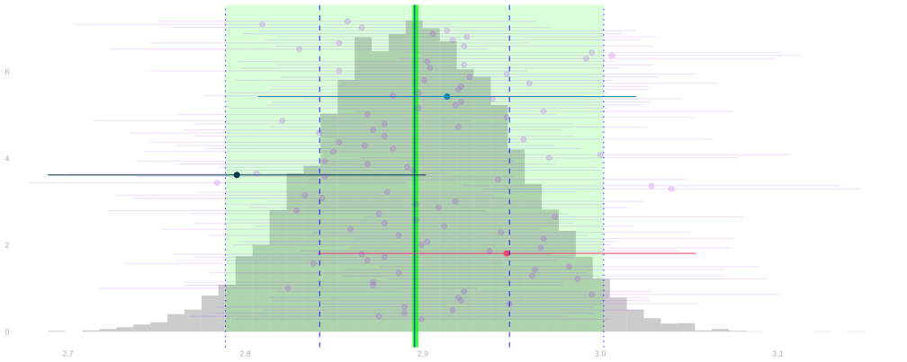
- That’s what the sampling distribution of average vote history looks like.
- As before, if we can estimate it we can use that estimate to get a 95% confidence interval.
- But, unlike before, we don’t have a nice parametric form like the Binomial.
- So we’ll use the bootstrap to estimate it.
The Bootstrap Sampling Distribution of Average Vote History
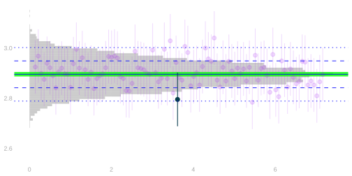
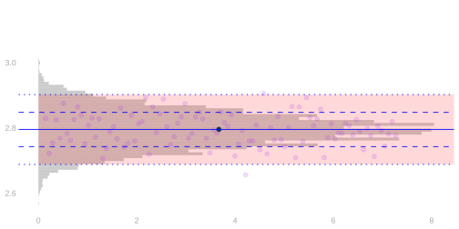
- It looks like it works in this case.
- The bootstrap sampling distribution is a good approximation to the actual sampling distribution.
- And the interval widths are similar.
But We Can’t Argue That It Should
- We’re no longer able to argue that it should work the way we did before.
- For the binary case, we took advantage of our knowledge of the parametric form.
- We knew the bootstrap sampling distribution was the plug-in binomial estimate.
- And we don’t have that now.
The Picture, Broken
\begin{array}{ccc} \underset{\textstyle\text{drawing from the population}}{\text{sampling distribution}} & \approx & \text{normal approximation} \\[18pt] {\overset{\normalsize ?}{\approx}} & & {\Big\downarrow}\ {\footnotesize\text{plug in estimates}} \\[18pt] \underset{\textstyle\text{drawing from the sample}}{\text{bootstrap sampling distribution}} & \approx & \text{its plug-in estimate} \end{array}
- For binary responses, the right side of our rectangle was exact: the parametric form.
- With vote history, there is no parametric form. The right side is broken.
- The plan is to replace it with the normal approximation — a parametric form for an approximation.
- That turns the top and bottom edges from = into \approx too.
- A question to sit with until then: we already had one approximation, plugging in.
- Once one edge of the rectangle is approximate, how much does it cost that the others are?
- Getting there takes two tools we’ll build over the coming weeks.
- Normal approximation, which gives us a parametric form for an approximation to our estimator’s sampling distribution.
- Techniques for variance calculation, which help us understand the parameters that go into it.
Scope of the Bootstrap
When the Poll Is Without Replacement
- The bootstrap resamples with replacement, no matter how the sample itself was drawn.
- So what it estimates is the with-replacement sampling distribution: the plug-in Binomial.
- But suppose our poll sampled without replacement. Then the real sampling distribution is Hypergeometric:
P_\theta(\hat\theta = t) = \binom{n}{nt}\, \frac{\bigl[m_1(m_1-1)\ldots(m_1-nt+1)\bigr]\,\bigl[m_0(m_0-1)\ldots(m_0-n(1-t)+1)\bigr]}{m(m-1)\ldots(m-n+1)} \quad\text{ for }\quad m_1 = m\theta, \ \ m_0 = m(1-\theta)
- Same two stages as last class — but calls use people up, so each factor falls as its response repeats.
- If we knew we’d sampled without replacement, and knew m, we could plug \hat\theta into this instead.
- The question for the bootstrap: how far apart are these two distributions, really?
The Shapes
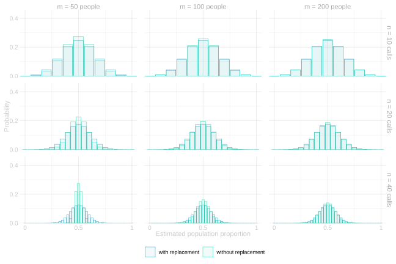
Walking the Edge
- Rows change the number of calls n; columns change the population size m. Walk the edge, clockwise from the top left.
- Top left, n=10 of m=50: a fifth of the population per poll. The schemes already disagree a little.
- Along the top to m=200: same ten calls, bigger population. The difference fades.
- Down to n=40 of m=200: a fifth again. A visible difference again.
- Along the bottom to m=50: forty calls to fifty people. The schemes come apart completely.
- If you’re sampling 40 of 50 people, it matters whether you put them back.
A Drop in the Ocean

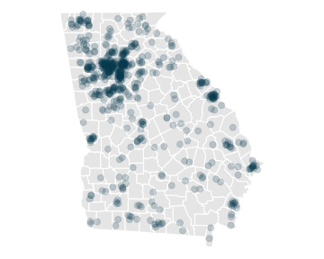
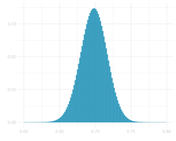
- In our turnout poll, it’s n=625 of m\approx 7 million. A drop in the ocean.
- The plot on the right is both sampling distributions — with and without replacement — overlaid.
- You see one teal histogram because they’re indistinguishable.
- It really doesn’t matter. And people use sampling with replacement for analysis just because it’s convenient.
Conservative Anyway
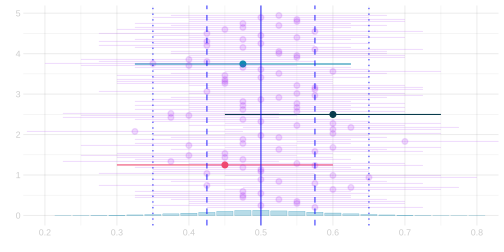
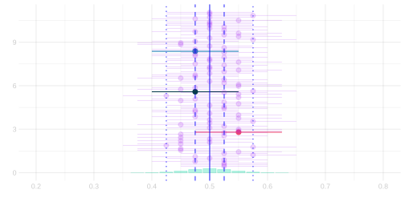
- Back at the bad corner — 40 calls to 50 people — the difference has a direction.
- Without replacement is narrower. You don’t waste calls on people you’ve already talked to.
- So if the truth is without-replacement and you analyze as if with-replacement — the bootstrap included —
- your intervals come out too wide, not too narrow.
- You cover more often than you promised. That’s called being conservative.
- Wrong, but wrong in the safe direction.
Footnotes
if and only if